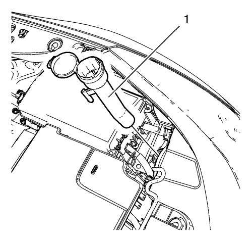
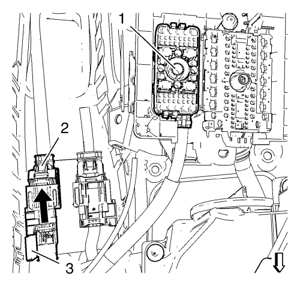
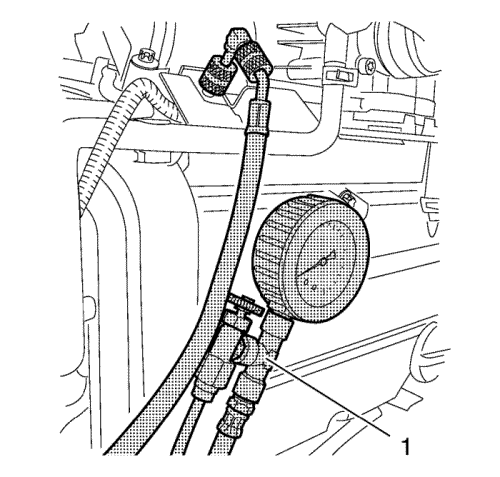
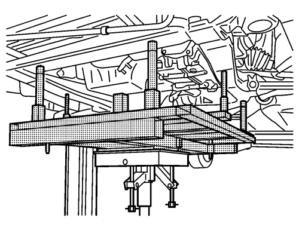
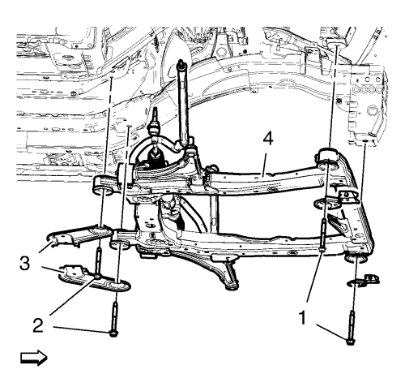

Sustitución del motor — 1.4L LUH y LUJ - M32
Herramientas especiales
| • | CH-904 Bastidor inferior |
| • | CH-49289 Bastidor de centrado |
| • | CH-49290 Herramienta de soporte del motor |
| • | EN-6015 Tapones de cierre |
Si desea informarse sobre herramientas regionales equivalentes, consultar Herramientas especiales .
Procedimiento de desmontaje
- Desmonte el tornillo inferior del eje intermedio de la dirección. Consultar Sustitución del eje intermedio de la dirección .
- Abra el capó.
- Recubra el agente frigorífico. Consultar Recuperación y recarga del agente frigorífico .
- Desmonte la bandeja de la batería. Consultar Sustitución de la bandeja de la batería .

- Desmonte el tubo de llenado del contenedor de disolvente del lavador del parabrisas (1).

- Desmonte la cubierta del bloque de fusibles del compartimento delantero (1).

- Afloje los 3 tornillos del bloque de fusibles del compartimento delantero (1).
- Suelte los 4 clips de soporte del bloque de fusibles del compartimento delantero (2) y (3), y levante el bloque de fusibles un poco.

Nota: Los enchufes del mazo de cables deben quedar en la parte inferior (4) del bloque de fusibles del compartimento delantero.
- Afloje por completo los 3 tornillos del bloque de fusibles del compartimento delantero (1) mientras se levanta el bloque de fusibles hasta que se pueda extraer de los 3 enchufes del mazo de cables (3), (5) y (6).

- Desmonte el enchufe del mazo de cables del ECM (1) de la parte inferior del bloque de fusibles del compartimento delantero.
- Desemborne el enchufe del mazo de cables del ECM (2) y suéltelo del clip de soporte (3).

- Desmonte las 3 tuercas del cable de masa (1) y aparte a un lado los 3 cables de masa (2).
- Suelte el mazo de cables del ECM de la carrocería.
- Suelte el mazo de cables del interruptor de la luz de marcha atrás de la carrocería.
- Retire el conducto de salida del purificador de aire. Consulte Sustitución del conducto de salida del filtro de aire → 1.4L LUH y LUJ.
- Desmonte el panel del paragolpes delantero. Consultar Sustitución del panel del parachoques delantero .
- Desmonte el conjunto de llanta y neumático delantero. Consultar Desmontaje y montaje de la rueda y el neumático .
- Vacíe el sistema de refrigeración. Consultar Drenaje y llenado del sistema de refrigeración .
- Desconecte el enchufe del mazo de cables del módulo indicador de nivel del refrigerante. Consulte Sustitución del módulo indicador de nivel del refrigerante del motor → LDD, LUH, LUJ, LDE, LLU, LUW.
- Desenganche el vaso de expansión del radiador. Consultar Sustitución del depósito de expansión del radiador .
- Aparte el vaso de expansión del radiador.
- Desmonte del cambio la palanca del cambio manual y el cable de la palanca selectora. Consultar Sustitución de los cables de la palanca selectora y de la palanca de cambio del cambio manual .
- Desmonte el tubo flexible de entrada y salida del calefactor de la pared frontal. Consultar Sustitución del tubo flexible de entrada del calefactor. → 2.0L Diésel LNP → 1.4L LUJ → 1.6L LDE, LXV y 1.8L 2H0 → 1.6L LXT y L2W → 2.0L Diésel LLW y Sustitución del tubo flexible de salida del calefactor → 2.0L Diésel LNP → 1.4L LUJ → 1.6L LDE, LXV y 1.8L 2H0 → 1.6L LXT y L2W → 2.0L Diésel LLW .
- Extraiga el conector eléctrico del mazo de cables del interruptor de la luz de marcha atrás y suéltelo del clip de soporte.
- Colecte un recipiente recogedor bajo el vehículo.
- Desconecte el tubo delantero del cilindro del actuador del embrague. Consultar Sustitución del tubo delantero del cilindro actuador del embrague → LHD - MZ0,MZ4,MR5,MF3 → RHD - M32, MF3, MZ0, MZ4, MR5 → Volante a la derecha con D33 → Volante a la derecha con D16 → Volante a la izquierda con D33 → Volante a la izquierda con D16 .

Advertencia: La gasolina o los vapores de gasolina son muy inflamables. Puede producirse un incendio si existe una fuente de chispa. Nunca vacíe o almacene gasolina o combustible diesel en un recipiente abierto debido al riesgo de explosión o incendio. Disponga de un extintor de incendios químico seco (clase B) en las proximidades.
- Retire la caperuza 1 del tubo de inyección de combustible.

- Libere presión de combustible. Utilice el manómetro EN-34730-91 (1).

- Retire el tubo de alimentación de combustible (4) del tubo de distribución de combustible.
- Suelte el tubo de alimentación de combustible del clip de soporte (1).
- Retire el tubo de ventilación de combustible (2) de la válvula solenoide de purga del depósito antiimpurezas de emisión de vapores.
- Suelte el tubo de ventilación de combustible del clip de soporte (1).
- Cierre los aireadores con los tapones de cierre EN-6015.
- Desconecte el tubo de depresión de refuerzo del freno (3) del colector de admisión.

- Desmonte la tuerca del tubo flexible del condensador inferior (3).
- Desmonte el tubo flexible del condensador inferior (1) y el anillo de junta (2).

- Desmonte la tuerca del tubo flexible del compresor y del condensador del A/C (1) del tubo flexible del evaporador del aire acondicionado.
- Desmonte el tubo flexible (2) del compresor y del condensador del A/C y el anillo de junta (3) del tubo flexible del evaporador del aire acondicionado.
- Elevar el vehículo y soportarlo de manera segura. Consultar Elevación y soporte en alto del vehículo .
- Retirar el protector de salpicaduras del habitáculo frontal. Consultar Sustitución del protector de salpicaduras del habitáculo frontal .
- Desmonte la varilla de la barra estabilizadora del amortiguador en los dos lados. Consultar Sustitución de la varilla de la barra estabilizadora .
- Desmonte de la mangueta la barra de acoplamiento exterior del varillaje de la dirección en los dos lados. Consultar Sustitución la barra de acoplamiento exterior del varillaje de la dirección .
- Desmonte de la mangueta el brazo de apoyo inferior delantero. Consultar Sustitución del brazo de apoyo inferior .
- Desmonte los ejes de las ruedas delanteras de los cubos de rueda. Consultar Sustitución del árbol impulsor de la rueda delantera - Lado derecho y Sustitución del árbol impulsor de la rueda delantera - Lado izquierdo .
- Desconecte los sensores de velocidad de la rueda de ambos lados y suelte el bastidor de la suspensión.
- Desmonte del bastidor los retenes del mazo de cables del sensor de velocidad de la rueda.

- Desconecte el enchufe del mazo de cables del ventilador de refrigeración del motor (1) y suéltelo del bastidor de la suspensión (2).
- Desconecte el enchufe del mazo de cables de la EPS (3).
- Desconecte el enchufe del mazo de cables principal de la EPS de la unidad de la EPS.
Nota: No confundir con el catalizador de tres vías calentado.
- Desmonte el catalizador. Consultar Sustitución del catalizador → 1.4L LUH y LUJ → 1.6L LXT, L2W → 1.6L LDE, LXV, 1.8L 2H0 y LUW → 2.0L Diésel LLW .
- Monte la herramienta de soporte del motor CH-49290; para la instalación utilice el manual de montaje que se adjunta.
- Desmonte el soporte del motor. Consultar Sustitución del alojamiento del motor - lado derecho .
- Desmonte el soporte de la caja de cambios. Consulte Sustitución del soporte de montaje de la caja de cambios - lado izquierdo → excepto LUJ, LLU.
- Monte el bastidor de centrado CH-49289; para la instalación utilice el manual de montaje que se adjunta.

- Levante el bastidor inferior CH-904 y el bastidor de centrado CH-9289 con el elevador hidráulico hasta que entren en contacto con el bastidor.

Nota: Los pernos de posicionado (2, 3) del bastidor de centrado CH-49289 deben acoplarse en los orificios del bastidor del tren de rodaje.
- Compruebe si se requiere alinear las ruedas.
Extraiga los pasadores de posicionamiento (1) y trate de introducirlos en los orificios de los bajos.
Si los pernos guía no se pueden meter, se debe seguir Medición de la alineación de las ruedas después de montar el bastidor del tren de rodaje.

Nota: Gráfico simplificado. La unidad del motor y el cambio se fija con la herramienta del soporte del motor al bastidor de la suspensión. El bastidor de la suspensión se apoya en el adaptador de centrado y el bastidor inferior.
- Quite los pernos delanteros (1) del bastidor.
- Quite los pernos traseros (2) del bastidor.
- Desmonte los refuerzos (3) del bastidor.
- Baje el bastidor de la suspensión (4) con cuidado con la unidad del cambio del motor desmontada del vehículo y el elevador hidráulico a unos 7 cm (2,76 pulg.).
- Desmonte los 2 tornillos del soporte del mazo de cables de la unidad de la EPS.
- Desmonte los 2 soportes del mazo de cables de la unidad de la EPS.
- Desmonte con cuidado del vehículo, usando un elevador hidráulico, el bastidor de la suspensión junto con la unidad del cambio del motor
- Desmonte el semieje derecho de la caja de cambios. Consultar Sustitución del árbol impulsor de la rueda delantera - Lado derecho .
- Desmonte el semieje izquierdo de la caja de cambios. Consultar Sustitución del árbol impulsor de la rueda delantera - Lado izquierdo .

- Retire el tubo flexible (3) de purga de aire del refrigerante del motor de la salida de agua.
- Retire el tubo flexible (1) de entrada del calefactor de la bomba de agua.
- Retire el tubo flexible de salida del calefactor (2) de la salida de agua.
- Desmonte el depósito de expansión del radiador (4) junto con el tubo flexible de purga de aire del refrigerante del motor y los 2 tubos flexibles del calefactor.
- Desmonte la tuerca del tubo flexible del compresor y el condensador del A/C (9) del condensador.
- Retire el tubo flexible (10) de alimentación del refrigerante del radiador de la carcasa del termostato de refrigerante del motor.
- Desmonte el tubo flexible (5) de retorno del refrigerante del radiador de la salida de agua.
- Retire el tubo flexible (8) de admisión de aire del enfriador de aire del cargador del turbocompresor.
- Retire el tubo flexible (6) de aire de salida del refrigerador de aire de carga del cuerpo de la mariposa. Consultar Sustitución del tubo flexible de salida de aire del intercooler .
- Desmonte el conjunto completo de radiador (7) del bastidor de la suspensión.
- Monte un cable adecuado en los 3 soportes de elevación del motor.
- Monte un mecanismo de elevación del motor adecuado en el cable.
- Extienda el mecanismo de elevación del motor hasta que el cable de acero se tense un poco.

- Extraiga el perno pasante del soporte de la caja de cambios de la parte delantera (1).

- Extraiga el perno pasante de montaje al soporte del cambio (1).
- Baje y retire el bastidor.
- Coloque la unidad del cambio del motor en un palé de madera.
- Afloje los 8 pernos de la caja de cambios y retire 6 de ellos. Consultar Sustitución de la caja de cambios → 1.8L 2H0 → 1.4L LUJ o 1.6L LLU .
Nota: Se necesitan dos mecánicos.
- Retire los 2 últimos tornillos del cambio y la caja de cambios.
- Monte el motor en un soporte de motor adecuado.
- Transfiera las piezas según sea necesario. Consultar Fuera del vehículo.
Procedimiento de montaje
- Desmonte el motor del soporte de motor.
- Coloque el motor en un palé de madera.
Nota: Se necesitan dos mecánicos.
- Monte la caja de cambios y 2 de sus tornillos.
- Monte los 6 tornillos del cambio.
Precaución:Consulte Precaución con las fijaciones en la sección Prólogo.
- Apriete los 8 tornillos del cambio. Consultar Sustitución de la caja de cambios → 1.8L 2H0 → 1.4L LUJ o 1.6L LLU .
- Monte un cable adecuado en los 3 soportes de elevación del motor. Monte un mecanismo de elevación del motor adecuado en el cable. Eleve la unidad del cambio del motor y extienda el mecanismo de elevación de motores hasta que el cable de acero se tense un poco.
- Levante el bastidor inferior CH-904 y el bastidor de centrado CH-49289 con el elevador hidráulico hasta que entren en contacto con el bastidor.
- Coloque la unidad del cambio del motor en el bastidor delantero.
- Monte el tornillo pasante trasero (1) de los alojamientos del soporte del cambio y apriételo a 100 N·m (74 lib. pie).
- Monte el tornillo pasante delantero del alojamiento del cambio (1) y apriételo a 100 N·m (74 lib. pie).
- Desmonte el cable de los 3 soportes de elevación del motor.
- Monte el conjunto del radiador y el condensador en el bastidor de la suspensión.
- Monte el conjunto del radiador completo (7) en el bastidor de la suspensión.
- Monte el tubo flexible (6) de aire de salida del enfriador de aire de carga en el cuerpo de la mariposa. Consultar Sustitución del tubo flexible de salida de aire del intercooler .
- Monte el tubo flexible del refrigerador de aire de carga (8) en el turbocompresor.
- Monte el tubo flexible (5) de retorno del refrigerante del radiador en la salida de agua.
- Monte el tubo flexible (10) de admisión del refrigerante del radiador en la carcasa del termostato del refrigerante del motor.
- Monte el tubo flexible (9) del condensador y el compresor del A/C en el condensador. Apriete la tuerca del tubo flexible del condensador en 19 N·m (14 lib. pies).
- Monte el depósito de expansión del radiador (4) junto con el tubo flexible de purga de aire del refrigerante del motor y los 2 tubos flexibles del calefactor.
- Monte el tubo flexible de salida del calefactor (2) en la salida de agua.
- Monte el tubo flexible de admisión del calefactor (1) en la bomba de agua.
- Monte el tubo flexible de purga de aire del refrigerante del motor (3) en la salida de agua.
- Monte el semieje derecho en la caja de cambios. Consultar Sustitución del árbol impulsor de la rueda delantera - Lado derecho .
- Monte el semieje izquierdo en la caja de cambios. Consultar Sustitución del árbol impulsor de la rueda delantera - Lado izquierdo .
Nota: Los pernos de posicionado (1) del bastidor de centrado CH-49289 deben extenderse para guiarlos hasta los orificios de los bajos.
- Mueva el bastidor (1) con la unidad del cambio del motor hacia la parte de arriba del vehículo hasta que se pueda fijar el soporte del mazo de cables en la unidad de la EPS.
- Monte el soporte del mazo de cables a la unidad de la EPS.
- Apriete los 2 tornillos del soporte del mazo de cables y apriételos a 9 N·m (80 lib. pulg.).
Nota: Gráfico simplificado. La unidad del motor y el cambio se fija con la herramienta del soporte del motor al bastidor de la suspensión. El bastidor de la suspensión se apoya en el adaptador de centrado y el bastidor inferior.
- Monte el bastidor (4).
- Monte los refuerzos del bastidor.
- Monte los tornillos traseros (2) del bastidor. Apriete sólo con la mano.
- Monte los tornillos delanteros del bastidor. Apriete sólo con la mano.
- Apriete los tornillos del bastidor trasero (2) y apriételos a 160 N·m (118 lib. pie).
- Apriete los tornillos del bastidor delantero (1) y apriételos a 160 N·m (118 lib. pie).
- Baje el bastidor de centrado CH-49289 con el elevador hidráulico hasta que se pueda desmontar.
- Desmonte el bastidor de centrado CH-49289; para la instalación utilice el manual de montaje que se adjunta.
- Monte el soporte del motor. Consultar Sustitución del alojamiento del motor - lado derecho .
- Monte el soporte de la caja de cambios. Consulte Sustitución del soporte de montaje de la caja de cambios - lado izquierdo → excepto LUJ, LLU.
- Retire la herramienta de soporte del motor CH-49290; para el desmontaje utilice el manual de montaje que se adjunta.
- Monte el catalizador. Consultar Sustitución del catalizador → 1.4L LUH y LUJ → 1.6L LXT, L2W → 1.6L LDE, LXV, 1.8L 2H0 y LUW → 2.0L Diésel LLW .
- Conecte el enchufe del mazo de cables del ventilador de refrigeración del motor (1) y fíjelo en el bastidor de la suspensión (2).
- Conecte el enchufe del mazo de cables de la EPS (3).
- Conecte el mazo de cables principal de la EPS a la unidad de la EPS.
- Monte los retenes del mazo de cables del sensor de velocidad de la rueda en el bastidor.
- Conecte el sensor de velocidad de la rueda en los dos lados.
- Monte los ejes de las ruedas delanteras en los cubos de rueda. Consultar Sustitución del árbol impulsor de la rueda delantera - Lado derecho .
- Monte el brazo de apoyo inferior delantero en la mangueta. Consultar Sustitución del brazo de apoyo inferior .
- Monte la barra de acoplamiento exterior del varillaje de la dirección en la mangueta en los dos lados. Consultar Sustitución la barra de acoplamiento exterior del varillaje de la dirección .
- Monte la varilla de la barra estabilizadora en el amortiguador en los dos lados. Consultar Sustitución de la varilla de la barra estabilizadora .
- Monte el protector contra salpicaduras del compartimento delantero. Consultar Sustitución del protector de salpicaduras del habitáculo frontal .
- Compruebe el nivel de aceite del cambio. Consultar Revisión del nivel de aceite del cambio .
- Bajar el vehículo.
Nota: Utilice una junta tórica nueva. Consultar Sustitución de la junta tórica del aire acondicionado .
- Monte el tubo flexible del condensador y del compresor del A/C (2) y el anillo de junta (3) en el tubo flexible del evaporador del aire acondicionado.
- Monte la tuerca del tubo flexible del condensador y del compresor del A/C (1) en el tubo flexible del evaporador del aire acondicionado y apriétela a 19 N·m (14 lib. pies).
Nota: Utilice una junta tórica nueva. Consultar Sustitución de la junta tórica del aire acondicionado .
- Monte el tubo flexible del condensador inferior (1) y el anillo de junta (2).
- Monte la tuerca del tubo flexible del condensador inferior (3) y apriétela hasta 19 N·m (14 lib. pie).
- Quite los tapones de cierre EN-6015.
- Conecte el tubo de alimentación de combustible (4) en el carril de la válvula de inyección de combustible.
- Fije el tubo de alimentación de combustible al clip de retención (1).
- Acople el tubo de ventilación de combustible (2) en la válvula solenoide de purga del depósito antiimpurezas de emisión de vapores.
- Fije el tubo de ventilación de combustible al clip de retención (1).
- Conecte el tubo de depresión de refuerzo del freno (3) en el colector de admisión.
- Monte la caperuza del conducto de la válvula de inyección de combustible (1).
- Conecte el tubo delantero del cilindro del actuador del embrague. Consultar Sustitución del tubo delantero del cilindro actuador del embrague → LHD - MZ0,MZ4,MR5,MF3 → RHD - M32, MF3, MZ0, MZ4, MR5 → Volante a la derecha con D33 → Volante a la derecha con D16 → Volante a la izquierda con D33 → Volante a la izquierda con D16 .
- Purgue el sistema de embrague hidráulico. Consultar Purga del sistema de embrague hidráulico .
- Rellene el depósito con líquido de embrague/frenos hasta el nivel máximo (MAX).
- Enchufe el conector eléctrico del mazo de cables del interruptor de las luces de marcha atrás.
- Monte el tubo flexible de entrada y salida del calefactor en la pared frontal. Consultar Sustitución del tubo flexible de entrada del calefactor. → 2.0L Diésel LNP → 1.4L LUJ → 1.6L LDE, LXV y 1.8L 2H0 → 1.6L LXT y L2W → 2.0L Diésel LLW y Sustitución del tubo flexible de salida del calefactor → 2.0L Diésel LNP → 1.4L LUJ → 1.6L LDE, LXV y 1.8L 2H0 → 1.6L LXT y L2W → 2.0L Diésel LLW .
- Monte la palanca de cambio manual y el cable de la palanca selectora en el cambio. Consultar Sustitución de los cables de la palanca selectora y de la palanca de cambio del cambio manual .
- Enganche el vaso de expansión del radiador. Consultar Sustitución del depósito de expansión del radiador .
- Conecte el enchufe del mazo de cables del módulo indicador de nivel del refrigerante. Consulte Sustitución del módulo indicador de nivel del refrigerante del motor → LDD, LUH, LUJ, LDE, LLU, LUW.
- Monte el conjunto delantero de neumático y llanta. Consultar Desmontaje y montaje de la rueda y el neumático .
- Monte el panel del parachoques delantero. Consultar Sustitución del panel del parachoques delantero .
- Monte el conducto de salida del filtro de aire. Consulte Sustitución del conducto de salida del filtro de aire → 1.4L LUH y LUJ.
- Monte el enchufe del mazo de cables del ECM (1) en la parte inferior del bloque de fusibles del compartimento delantero.
- Conecte el enchufe del mazo de cables del ECM (2) y fíjelo en el clip de soporte (3).
- Monte los 3 mazos de cables (2).
- Monte las 3 tuercas de masa (1) y apriételas a 9 N·m (80 lib. pulg.).
Nota: Asegúrese de que los 3 enchufes del mazo de cables (3), (5) y (6) encajan perfectamente en el bloque de fusibles del compartimento delantero.
- Monte el bloque de fusibles del compartimento delantero (2) en la parte inferior (4) y ponga los tornillos (1) sin apretarlos.
- Fije el bloque de fusibles del compartimento delantero en los 4 clips de soporte (2) y (3).
- Apriete los 3 tornillos del bloque de fusibles del compartimento delantero (1) a 22 N·m (16 lib. pie).
- Monte la cubierta del bloque de fusibles del compartimento delantero (1).
- Monte el tubo de llenado del contenedor de disolvente del lavador del parabrisas (1).
- Monte la bandeja de la batería. Consultar Sustitución de la bandeja de la batería .
- Vacíe y llene el sistema de agente frigorífico. Consultar Recuperación y recarga del agente frigorífico .
- Compruebe el nivel de aceite y rellene con aceite de motor nuevo si es necesario.
- Llene el sistema de refrigeración. Consultar Drenaje y llenado del sistema de refrigeración .
- Cierre el capó.
- Monte el tornillo inferior del eje intermedio de la dirección. Consultar Sustitución del eje intermedio de la dirección .
| © Copyright Chevrolet. All rights reserved |